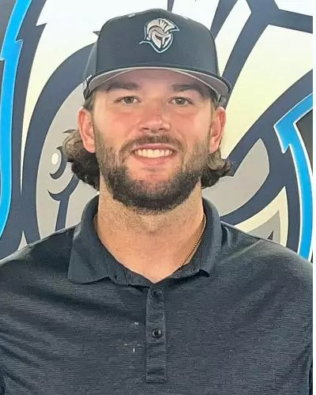
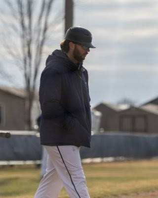

Hitting Tracker
01Game day / Live
Pitch-by-pitch tracking and swing-decision reports, built for the Mount Marty staff. A coach charts the game live and every hitter page, team page and export updates from the same shared data.
I help hitters understand what it takes to reach the next level, and I build the tools that help coaches get them there.



About
I'm a hitting trainer at Driveline Baseball in Tampa, Florida. Before that, I was the hitting coach at Dakota State University in Madison, South Dakota.
Most of my life is dedicated to furthering athletes' careers and helping them understand what they need to do to get to the next level. Early in my college career I was fortunate to have coaches who used data and technology to develop players. Those experiences are a big part of why I use the same resources in my own coaching.
At Driveline I've had the chance to put my creativity to the test and build tools that help both players and coaches. This site is a home for everything I make and my thoughts on offensive development. It will keep changing as I keep improving in my career. Hopefully someone finds it useful, interesting, or both.
Selected work
Software for coaches and hitters: game-day tracking, teaching tools built on Statcast bat tracking, development reports and research.
Game day / Live
Pitch-by-pitch tracking and swing-decision reports, built for the Mount Marty staff. A coach charts the game live and every hitter page, team page and export updates from the same shared data.

Coach education / Live
An interactive walkthrough of the bat path for coaches: up or down, side to side, swinging fast and adjustability. Built on 330,422 tracked swings from the 2025 MLB regular season, with each swing rebuilt in 3D.

Research / Live
Every 2025 MLB hitter's attack angle against the vertical approach angle of the pitches he sees. Plane mismatch explains why some hitters struggle with some pitch types, and the Plane Match Score rates it 0 to 100.

Player development / Single-file tool
Turns a hitter's Blast and HitTrax exports into one development report, compared against a chosen playing level, that prints as a PDF for the athlete. Drop in a program logo and the report takes on its colors.

Practice planning / Live
A blank pre-game batting practice template a staff fills in: groups, rotation timing, cage rounds and on-field rounds. Plans save in the browser and print or export to PDF.

Practice planning / Live
A blank weekly hitting calendar. Each day gets a focus and a plan for every cage and the field, with machines, pitch shapes, drills and swing counts.
Writing
Write-ups on player development, the tools above, and what I'm learning along the way.
Contact
Coaching, player development, or something you want built. Reach out on any of these.